Visit cloudcannon.com to sign in to your account.
Click the ‘Log In’ button in the top right hand corner of the page.
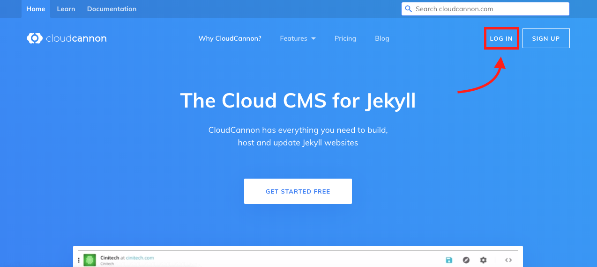
Enter your details into the form and click the ‘Log In’ button.
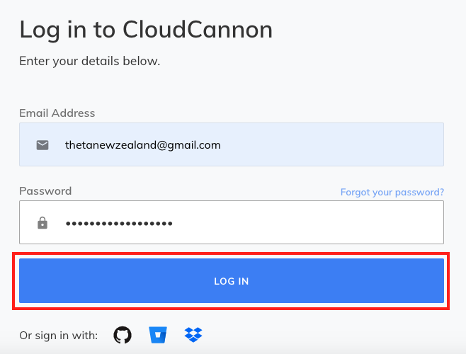
Once you’ve successfully signed in click on the Theta website box in the middle of the page.
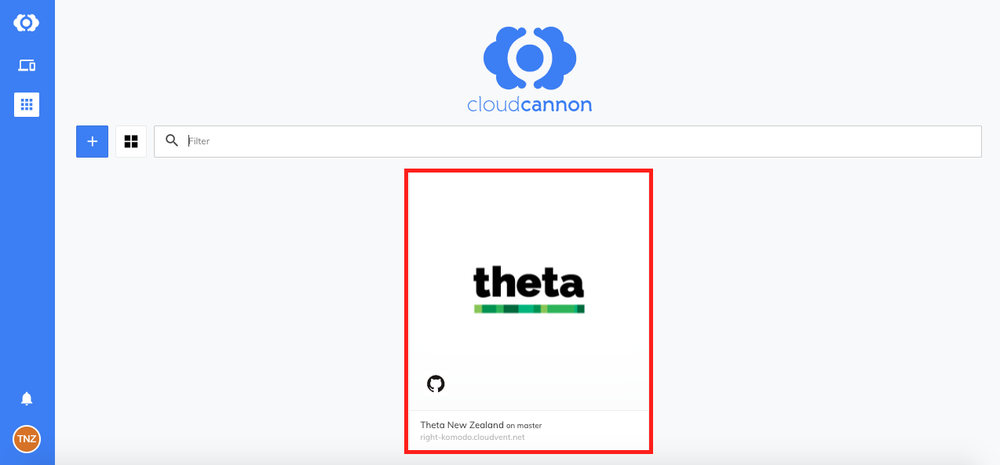
This will take you to your dashboard.
From here you’ll be able to edit the contents of the website.
To edit content, click on the ‘Explore’ button on the left hand side of the page.
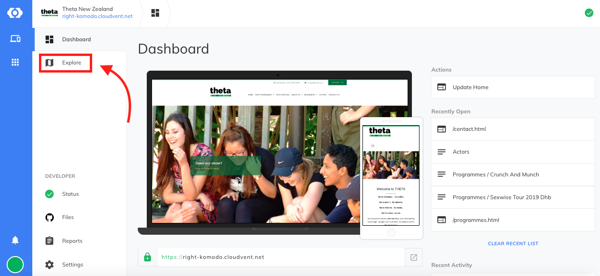
The explore tab holds the pages that make up your website.
You can navigate through the different pages using the sidebar on the left.
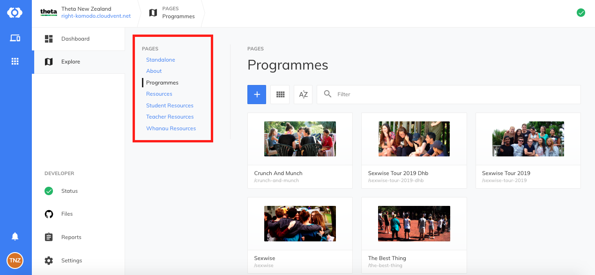
Any of the pages on the left sidebar are able to be edited.
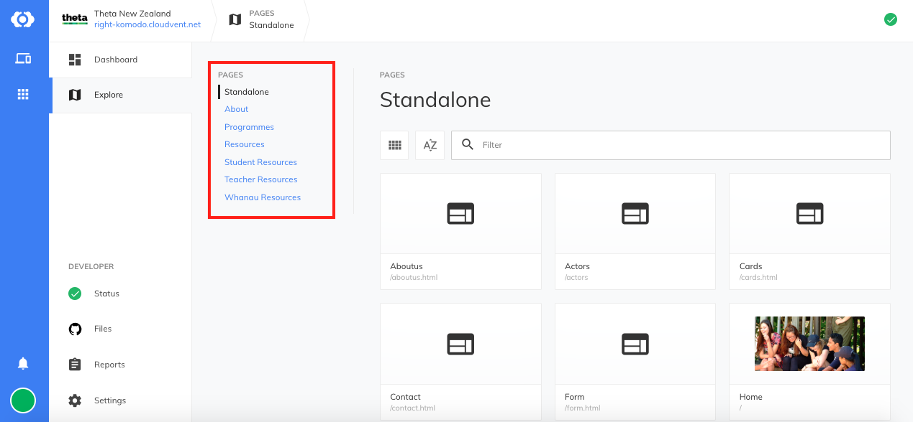
To begin editing, double click on a page.
If you want to edit or add content to the body of the page you can do so in the white box on the left.
Page details can be edited in the right column.
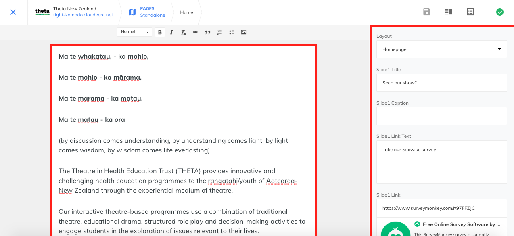
Once you’ve made your changes, click save in the top right corner.
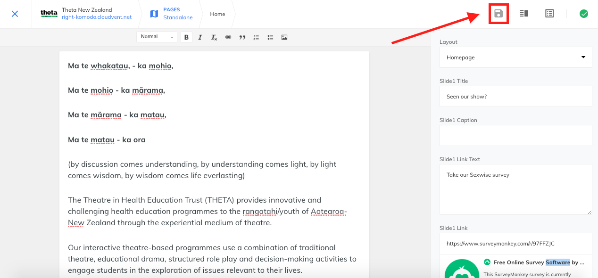
On the dashboard navigate to the ‘files’ page.
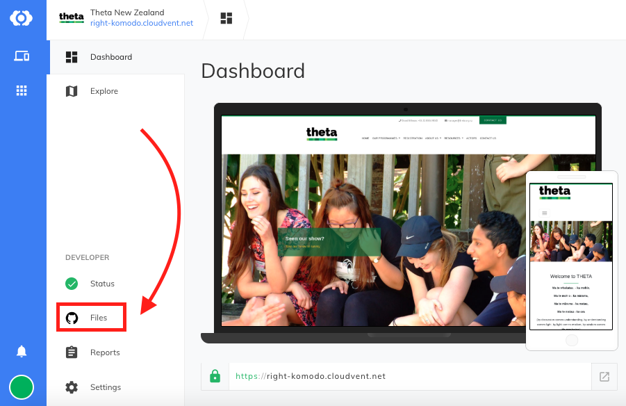
Open the includes folder
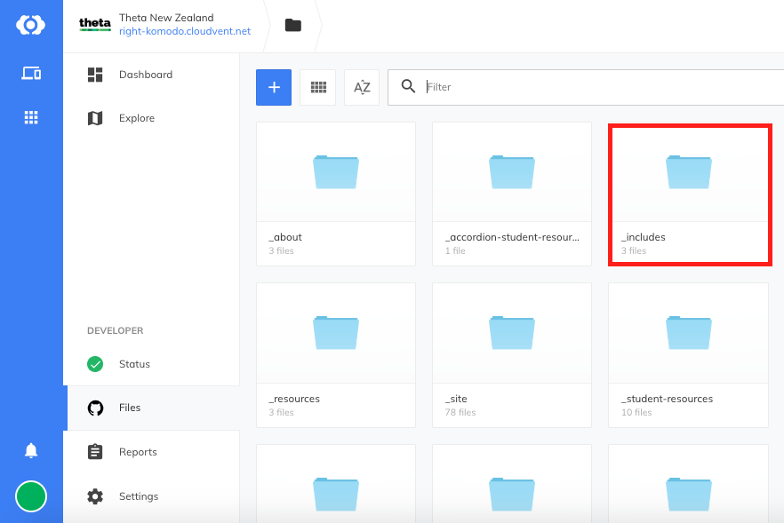
There are 3 folders inside _includes, these are Address, Email and Phone. Double click on any of the files to edit.
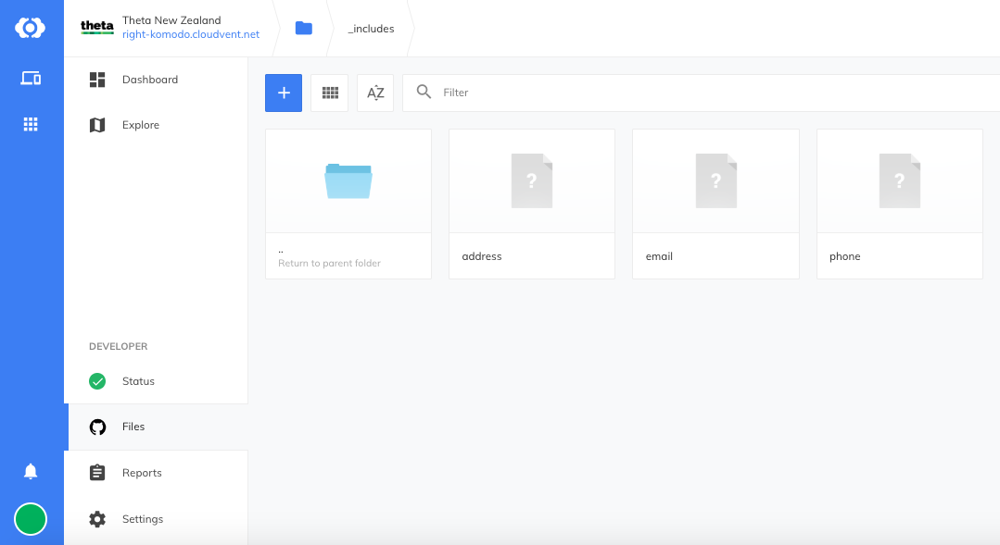
Click save in the top right corner when you’re done.
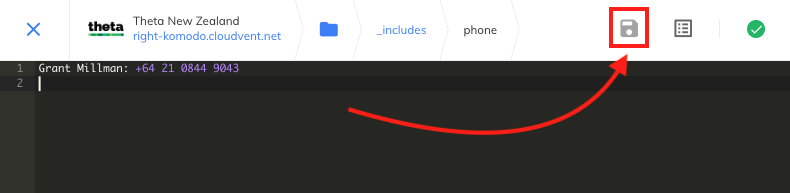
Check the website to make sure you’ve made the correct changes.
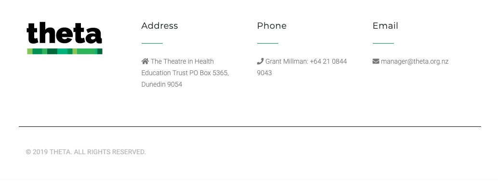
From the ‘Explore’ page, navigate to ‘Programmes’ in the left sidebar.
Click the + button.
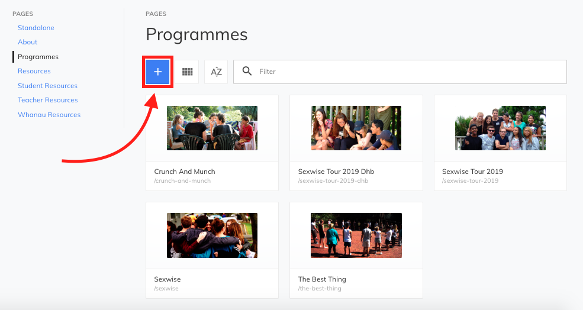
In the dropdown, click the ‘Add Programme’ button.
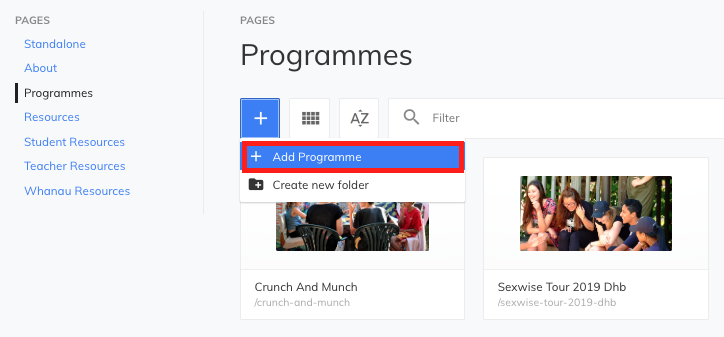
You will be redirected to your new programme page.
The main body text for the page should be entered in the red box on the left. This should contain information about a particular programme.
The right side of the page holds page information such as layout, page title, description and image.
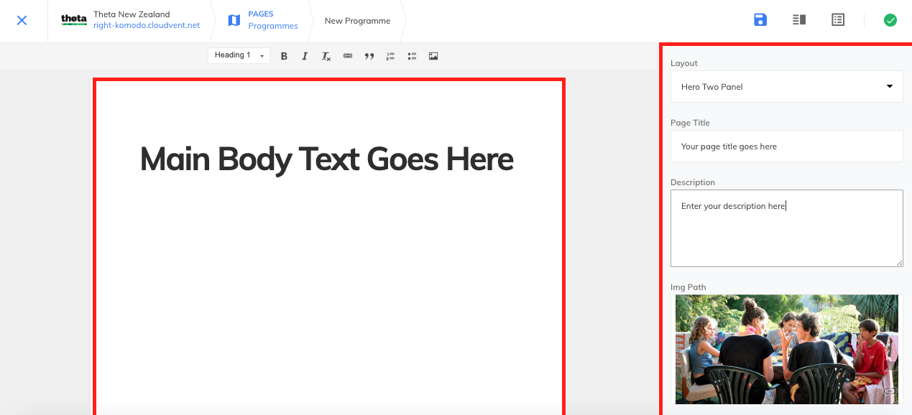
You can use the toolbar above the left hand pane to style your text as well as add features such as links, images and lists.
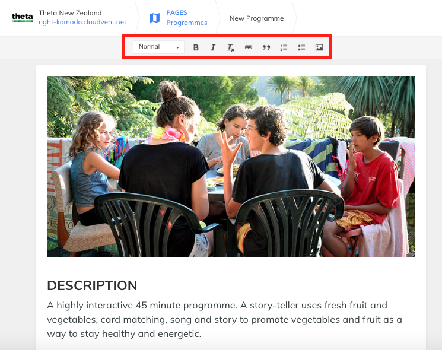
From the ‘Explore’ page, navigate to ‘Resources’ in the left sidebar.
Click the + button.
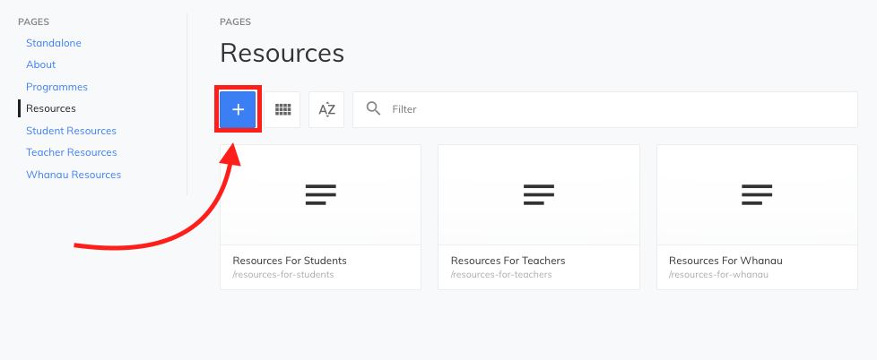
In the dropdown, click the ‘Add Resource’ button.
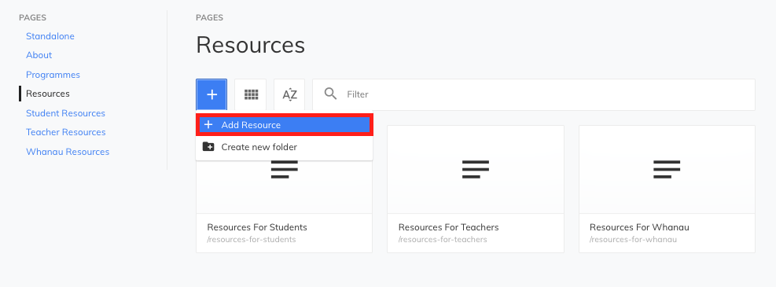
You will be redirected to your new programme page.
The main body text for the page should be entered in the red box on the left. This should contain information about a particular programme.
The right side of the page holds page information such as layout, page title, description and image.